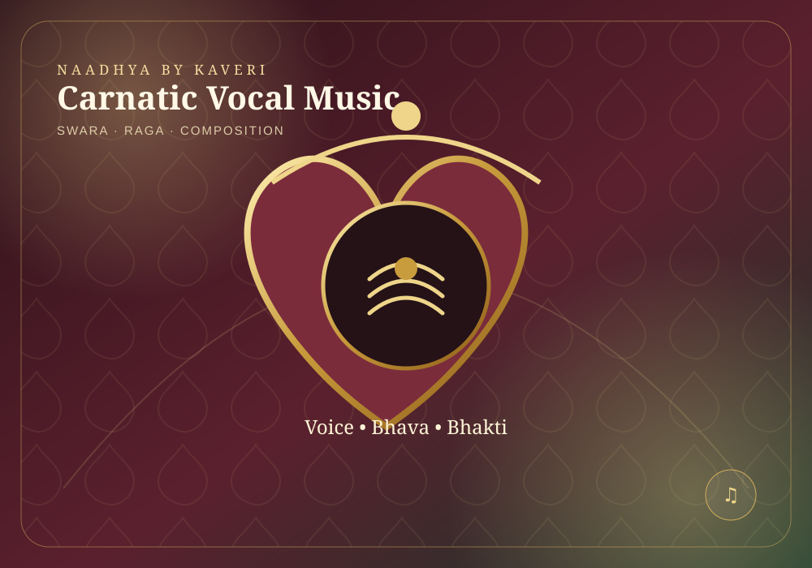
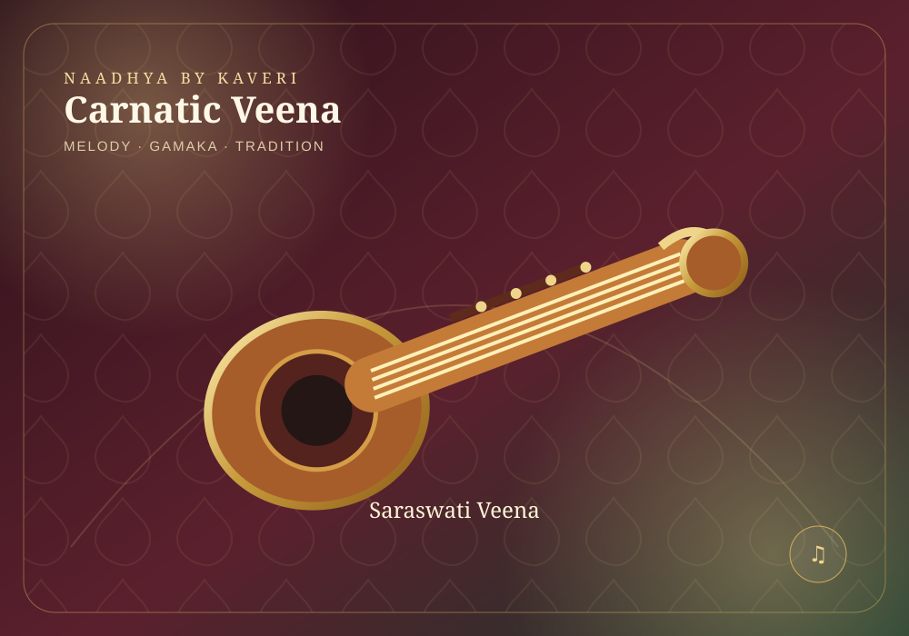
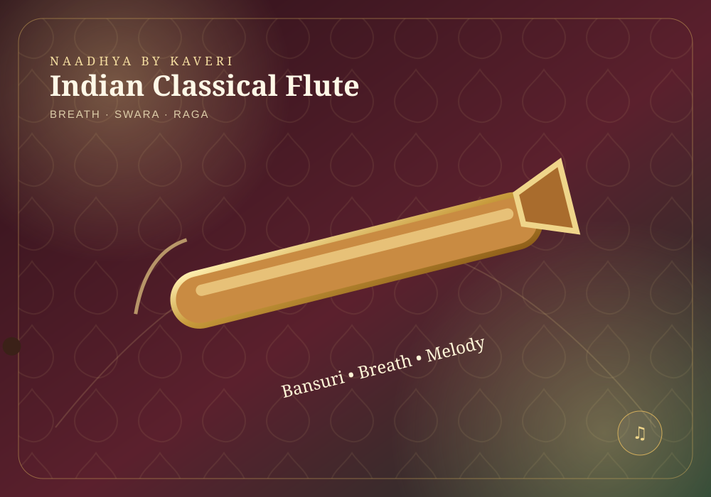
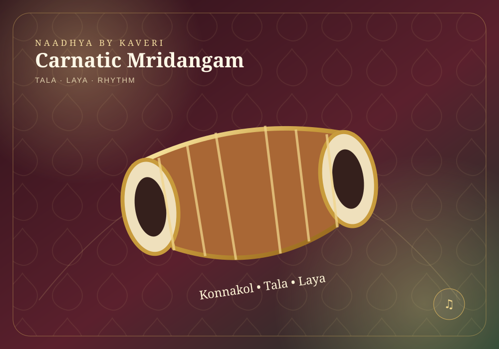
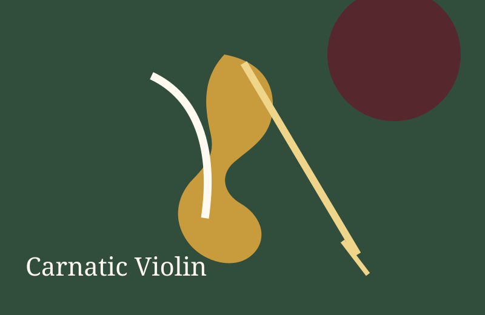
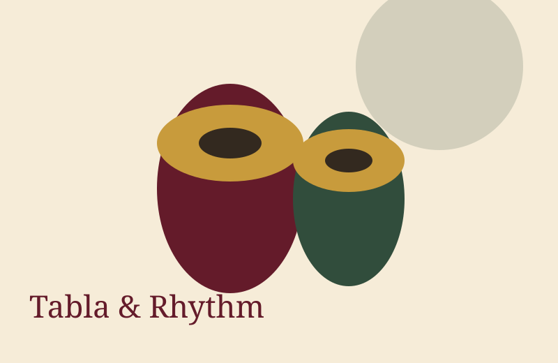

01 · VOCAL

Carnatic Vocal Music
Vocal · Carnatic Classical
Learn swaras, geethams, varnams, kritis, ragas and talas with a strong Carnatic foundation.
₹1,500 / monthEnquire
Explore traditional Indian music courses with images that match each instrument and learning style.

Learn swaras, geethams, varnams, kritis, ragas and talas with a strong Carnatic foundation.

Build posture, fingering, swara knowledge, compositions and confident performance skills on the veena.

Learn breath control, fingering, swaras, simple compositions and raga-based playing step by step.

Develop tala awareness, basic strokes, rhythmic patterns and accompaniment skills for Carnatic music.

Learn bowing, fingering, swaras, varnams and beginner-friendly raga exercises in the Carnatic style.

Learn basic bols, hand technique, simple thekas and rhythmic patterns through guided practice.
Focused sessions with special topics, guest artists and practical learning.
Preparation for presentations, cultural programs and academy showcases.
Understand the language, terminology and concepts behind the art.
Celebrate festivals and heritage through music and performing arts.